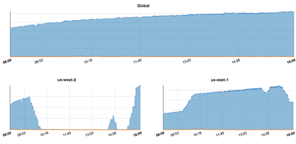
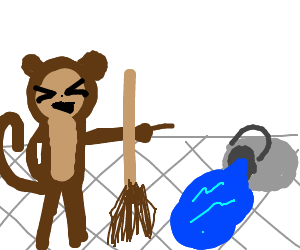

Notes to Gremlin Editors
The following items are assorted things for Austin and/or other editors to take note of and evaluate. All project files and original Markdown can be found on the gremlin-chaos-monkey GitHub repository.
Titles
- During creation, the sections and content of the Chaos Monkey Resources, Guides, and Downloads evolved to encompass Chaos Engineering in general, as opposed to just Chaos Monkey, as the page title implies. I recognize the original intent of the title is to capture search traffic based on the “Chaos Monkey” keyword, but editors should consider whether the page title and/or section titles should change, as they are currently not all that congruent.
Images
-
The following
AWS Spinnaker Quick Start Architectureimage, as used in the Developer Tutorial, is copyright of AWS. If desired, please recreate image for Gremlin.
- The History of Netflix Streaming section ends with the line “Thus, the Netflix team began their journey into Chaos.” This might be a good place for a “Journey into Chaos”-style image.
- Currently, the URL
/pdf-downloadis being used to reference the future downloadable PDF version of this guide. Please change all instances of this URL throughout the guide if the target URL changes as well. -
The following chart is currently used in the Simian Army - Chaos Kong section and is copyright of Netflix. Please determine if use, with attribution, should remain or if image should be removed. 
Netflix Chaos Kong Experiment - Courtesy of Netflix
-
Janitor Monkeypaint image seen below and used in Simian Army - Janitor Monkey is copyright of Drawception user XII. But, it made me laugh so I had to include it. Perhaps something similar can be used here for the guide.
Links
All internal and frequently-used URLs are located in the src/_internal/nav-internal.md template, which is then included via {% include nav-internal.md %} at the end of every Markdown file. Therefore, to change a link throughout the full guide simply requires changing it in nav-internal.md and rebuilding.
Testing URL Validity and Functionality
-
The
html-proofergem is used to help verify link validity. It can be run manually, but theRakefileis configured to perform a Jekyll build and then executehtml-proofer.# RAKEFILE require 'html-proofer' task :test do # Temporarily replace baseurl for shared mount directories to hash correctly. sh "bundle exec jekyll build --baseurl ''" options = { assume_extension: true, url_ignore: [ # Documentation link. "http://localhost:9000", # PDF Download not implemented "/pdf-download", ] } HTMLProofer.check_directory("./docs", options).run endExecute with standard
rake testcommand.rake testErrors indicate the specific problem, while a successful output confirms all links are valid and functional.
Running ["LinkCheck", "ScriptCheck", "ImageCheck"] on ["./docs"] on *.html... Checking 257 external links... Ran on 16 files! HTML-Proofer finished successfully.
Gremlin Links
Gremlin-specific links may need to be updated, depending on what “landing” page users should be redirected to.
For example, where should references to signup for/acquire a Gremlin account point to? At present, they use the #gremlin-account-signup navigation link key, which resolves to this URL.
See all #gremlin- prefixed URLs in src/_includes/nav-internal.md.
External Links
By default, all external links are processes with target="_blank" rel="noreferrer noopener" tags, opening them in a new window. To disable this behavior disable the jekyll-target-blank gem and rebuild.
Resources
- Google Sheets document found here.
-
Save URLs to
src/_data/resource-urls.csvand executetitlesScrapy spider, specifying full input and output file paths.scrapy crawl titles -a input="/mnt/hgfs/work/Gremlin/gremlin-projects/chaos-monkey/src/_data/resource-urls.csv" -t csv --nolog -o - > "/mnt/hgfs/work/Gremlin/gremlin-projects/chaos-monkey/src/_data/resource-titles.csv"Scraping will be very slow because
CONCURRENT_REQUESTSandCONCURRENT_ITEMSare set to1, to maintain the same output order as input order. - Paste exported
Titlesinto Google Sheet column.
Notes/Admonitions
Throughout the Markdown text I’ve frequently used note/admonition syntax to highlight particular points or snippets. For Jekyll I’m using the Premonition Ruby gem located in gems/premonition, which uses a quote (>) syntax as seen in the documentation here.
The purpose of these is similar to the Admonition extension of MkDocs. Obviously the final Markdown parser and formatting of these callouts is up to you, but if possible I think the final product will look better if these blurbs can be highlighted in some way.